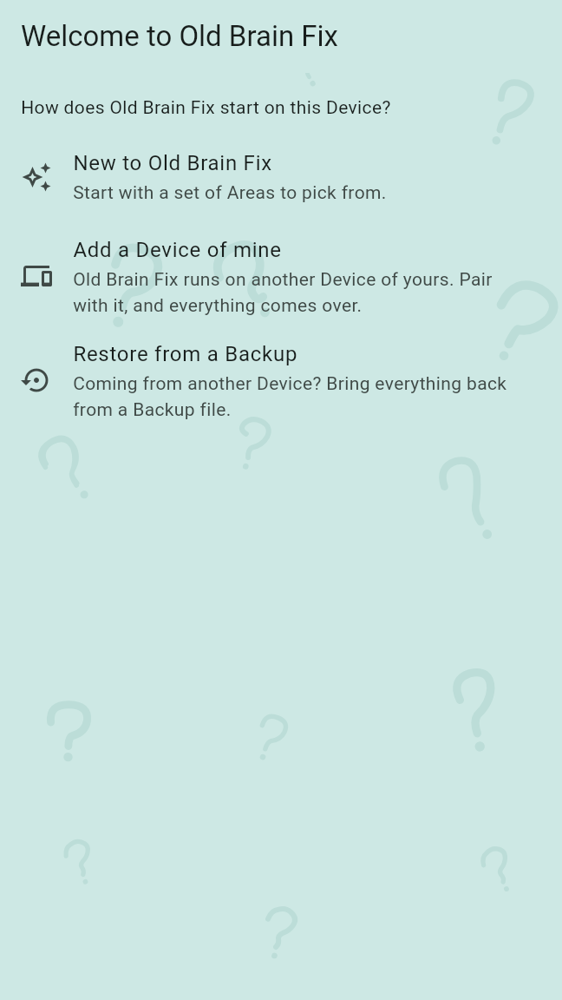
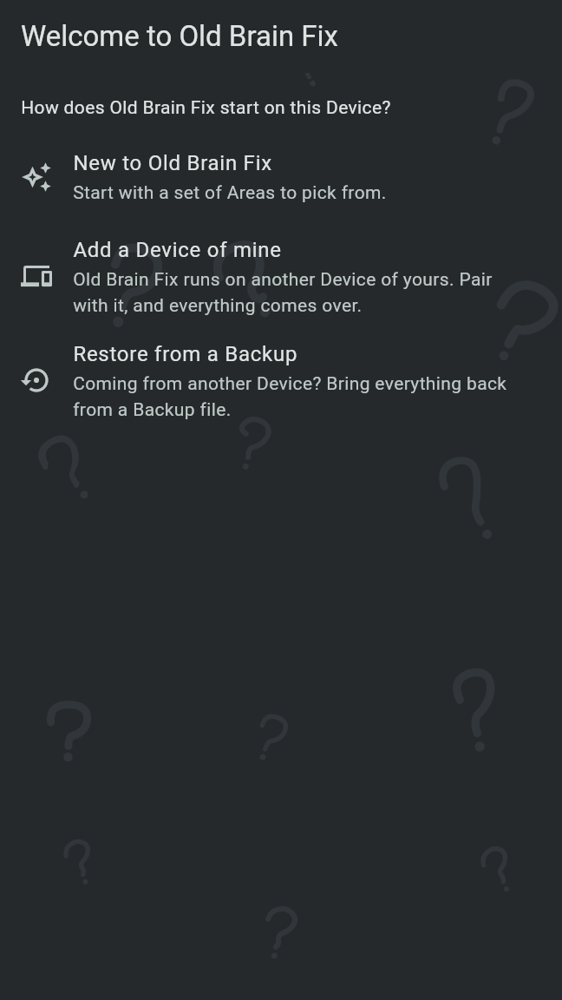
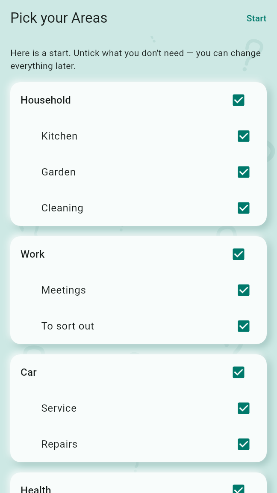
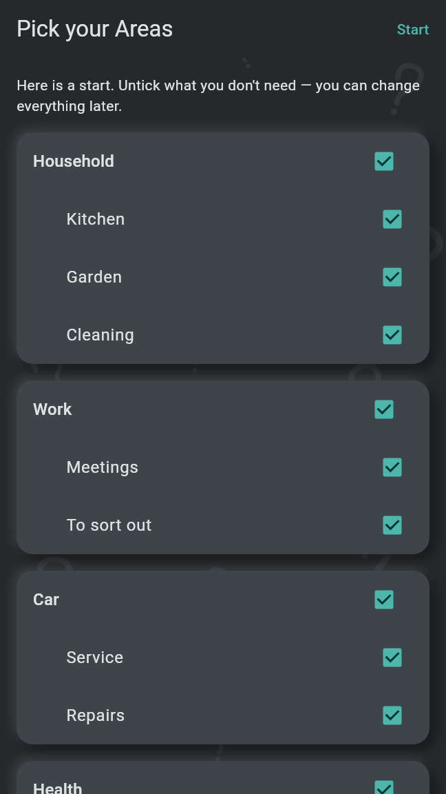

On its first start, Old Brain Fix asks how it starts on this Device: new, as another Device of yours, or from a Backup. The phone then offers the speech model and walks through the access that alarms need; after that the Agenda opens.
The first screen, "Welcome to Old Brain Fix", asks "How does Old Brain Fix start on this Device?" and offers three rows. Each row is an action; tapping it goes on at once.


"Pick your Areas" shows the Starter Set, every Area and Topic ticked:
Untick what you do not need. A Topic stays only with its Area: unticking an Area unticks its Topics, and ticking a Topic ticks its Area again. Start keeps what is ticked. Back returns to the three choices. Areas and Topics can be renamed, added and deleted later in the notes browser.
Your Profile is made from the Device's name. Its name and picture are changed on the Profile page, behind the Profile picture in the Agenda's top corner.


This pairs the new Device with one that already runs Old Brain Fix. The two Devices pair either way round:
Once a sync went through, the new Device holds your Profile, your Areas and your Notes. The Starter Set is not offered, and the Profile is the one of your other Device. A failed sync, a Device turned away or Back return to the three choices.
Choose the Backup file, then open it with its passphrase or with the recovery key from the Recovery Sheet, typed in or scanned from the sheet, and tap Restore. A Backup goes only onto a Device that holds no Notes yet. The Starter Set is not offered afterwards: the Areas come with the Backup.
Settings are not in a Backup. After a restore, set alarms and locks again, choose the Backup folder again and pair your other Devices again.
When Android's own backup brought a Backup back from your Google account together with the app, the first start opens it at once ("A Backup came back") and asks for the passphrase or the recovery key. Start without it leaves it and returns to the three choices.
After the Starter Set, a restore or an added Device, the phone asks "Transcribe voice Notes on the phone?". The speech model turns voice recordings into a Transcript you can read and search; it is downloaded once (148 MB) from Old Brain Fix's own release on GitHub and runs on the phone.
On mobile data the screen says how much of it the download uses. The offer is made only once and only where the speech model can run and none is in place yet. Settings, Speech model offers it at any time later, with a choice between the base and the small model, or a file of your own. Recordings are kept either way.
Last, "Set up alarms" walks through the access that Routines and Reminders need, one step at a time: Notifications, Alarms on the minute and Full-screen alarms. Allow opens the system's question or page; Next goes on, also without it. A red banner on the Agenda shows while one is missing and leads back to the setup.
The first time you capture a Note, the app asks once whether it may record where you were ("Remember where you were?"). Capturing itself never asks anything.
The desktop app's first start shows the same three choices, each a button under its explanation.
The desktop asks for neither the speech model nor alarm access on its first start. The speech model is downloaded under Settings, Speech model.